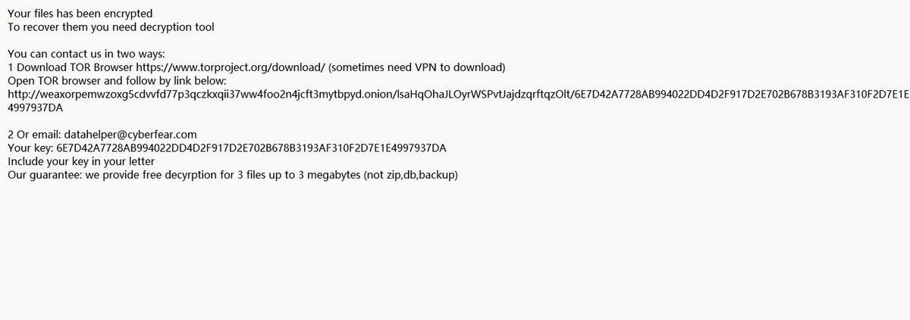
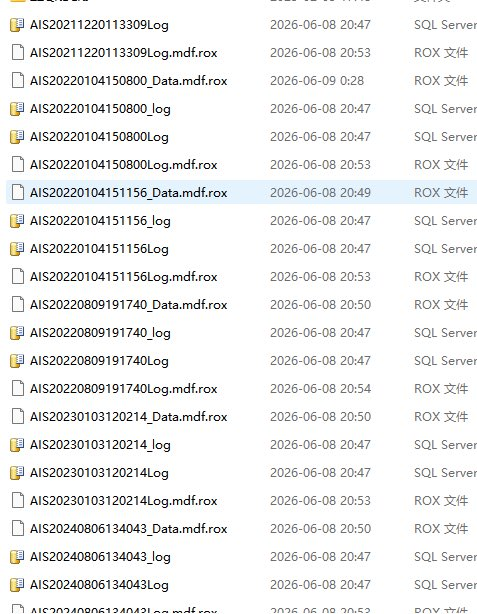

奶昔🥤
@realNyarime
@zouxulucky 只能找金蝶帮忙了，这种东西除非你能研究出是哪个程序加密的，才能对应写出解密软件


翼小旭Sunny Zou
@zouxulucky
🙏请求帮助：
姐姐所在公司的金蝶软件被黑客攻击了，收到黑客的勒索邮件
然后现在是重装了系统，金蝶软件
但是现在帐套数据全部被锁，无法访问，文件后缀都变成rox了
求问各位大佬有知道怎么解决这个问题的吗…（有偿） https://t.co/YnrjyaiTrq